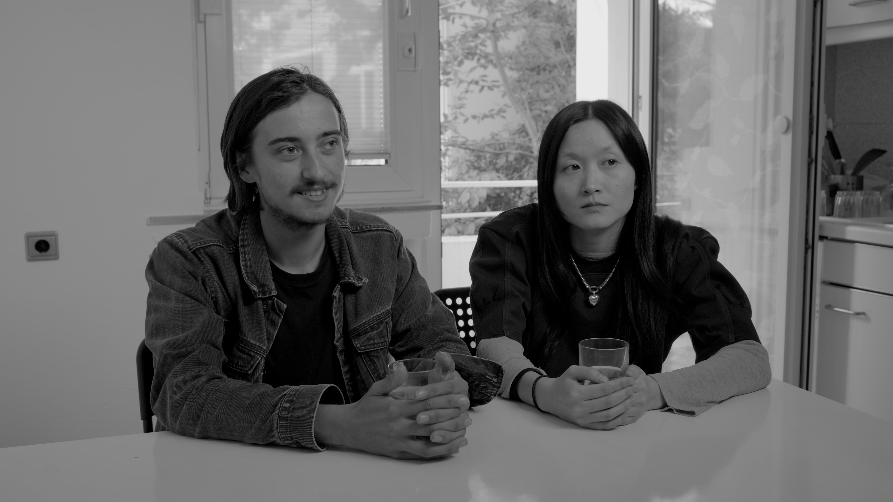
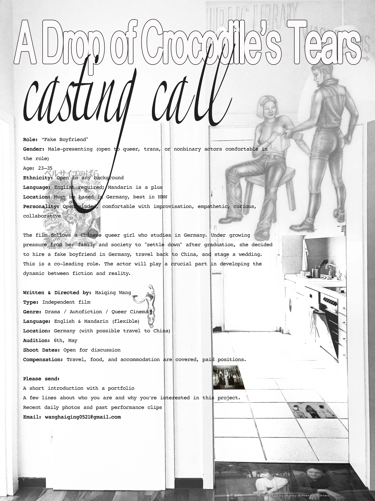

A Drop of Crocodile’s Tears follows the casting process for a film about Ting, a Chinese queer woman living in Germany. To escape family pressure to marry, she plans to hire a fake boyfriend and stage a wedding in China. As the casting unfolds, the line between fiction and reality begins to blur, revealing the complex relationship between performance, role-play, and truth—while exposing how power dynamics shape expectations around gender, social role, and storytelling.
The casting is not only part of the film’s plot but also part of the director’s real intention. Through this process, she tests whether such a staged wedding could actually take place with her own family. The casting becomes an emotional rehearsal, a transitional space.

